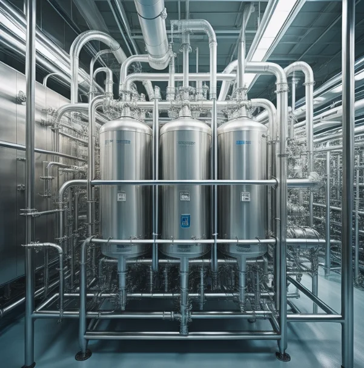

Audit-ready qualification packages, calibrated precision instrumentation, and rigorous field testing conforming strictly to WHO TRS, ISO 14644, MCC, and cGMP international guidelines.
Every piece of critical manufacturing equipment, utility system, and facility enclosure undergoes our structured four-tier qualification model to ensure complete audit compliance.
Documentary evidence that the proposed design of facilities, systems, and equipment is suitable for the intended purpose and strictly adheres to cGMP, URS (User Requirement Specifications), and engineering standards.
Documented verification confirming that equipment, piping, electrical systems, and instrumentation are properly installed in compliance with approved design drawings, manufacturer manuals, and local regulatory codes.
Systematic verification that equipment and utility systems operate across all specified operating ranges, challenge conditions, safety interlocks, alarm sequences, and critical control parameter limits.
Demonstrating through multiple consecutive production runs or simulated batch cycles that the system repeatedly and reproducibly produces output meeting all predetermined quality specifications.
Complete verification of cleanroom airflow dynamics, contamination barrier integrity, and particulate control in compliance with ISO 14644-1/2/3 and WHO TRS requirements.
Measuring supply, return, and exhaust airflow using calibrated capture hoods and duct traverse anemometry. Calculation of total Room Air Changes per Hour (ACPH) to ensure compliant air turnover.
Upstream poly-dispersed aerosol challenge (PAO) and downstream scanning with calibrated aerosol photometers to detect media leaks, frame leaks, and gasket bypass exceeding 0.01% penetration.
Establishing and recording air cascades across positive and negative pressure cleanrooms using high-precision digital manometers to prevent cross-contamination between adjacent processing areas.
Optical laser particle counters verify airborne particulate cleanliness under both "At-Rest" and "In-Operation" states for ISO Class 5 (Grade A), Class 6 (Grade B), Class 7 (Grade C), and Class 8 (Grade D).
Aerodynamic flow visualization with cleanroom-grade fog generators and high-definition video recording to assess unidirectional laminar flow, turbulent eddys, and air sweeps across critical operator interfaces.
Deliberately seeding the room with a 100x particulate contamination spike and precisely measuring the elapsed time required to return to baseline ISO cleanliness (verifying 15-20 min clean-up rate).
Critical verification of thermal kinetics, lethality calculations (F0 / FH values), and temperature distribution in sterilization and storage equipment.
Multi-channel thermocouple thermal profiling verifying heat distribution and heat penetration under empty and maximum loaded conditions. Automatic calculation of lethality accumulation (F0 ≥ 15 mins).
Verifying temperature uniformity at 250–350°C. Heat penetration studies paired with endotoxin challenge testing (pyrogen reduction verification exceeding a 3-log reduction).
Comprehensive multi-point mapping verifying thermal gradients, hot/cold spots, door-opening recovery times, and insulation hold during emergency power failure conditions.
Seasonal (summer and winter) 3D spatial mapping of raw material and finished goods warehouses using calibrated dataloggers to identify ambient climate exposure risks and fan circulation dead zones.
Mapping temperature and relative humidity (% RH) stability in ICH accelerated and long-term testing chambers to ensure total compliance with ICH Q1A guidelines.
Thermal distribution and insulation validation of cold chain delivery vehicles, insulated shippers, and active refrigerated containers under real transit stress scenarios.
Custom DQ, IQ, OQ, and PQ protocol generation and field execution for primary and secondary pharmaceutical processing machinery.
Qualification of High-Shear Mixer Granulators (HSMG), Fluid Bed Dryers (FBD), Double Cone Blenders, and Octagonal Blenders. Blend uniformity testing and drying cycle repeatability verification.
Speed challenge tests, feeder dynamics, tablet weight uniformity, thickness, and hardness consistency verification across rotary tablet compression machines.
Aseptic vial washing, sterilization, filling, stoppering, and capping lines. Fill volume accuracy, dosing pump repeatability, and particulate control checks.
Automatic capsule filling machines: weight variation testing, powder tamping pressure verification, and visual capsule inspection system calibration.
Forming temperature profiling, sealing roller pressure verification, leak detection testing (methylene blue bath), and vision inspection rejection verification.
Cartoning machines, checkweighers, 2D matrix barcode track-and-trace serialization systems, and automated tamper-evident labeling machinery.
Validation protocols safeguarding direct product-contact utilities in strict compliance with pharmacopeial and ISO standards.
In pharmaceutical operations, compressed air comes into direct contact with finished dosage forms and sterile containers. We validate system purity, pipework integrity, and filtration efficacy across all points of use.
Pure steam is critical for sterilizers, CIP/SIP operations, and cleanroom humidification. Our qualification protocols examine physical steam quality and generator efficiency to prevent wet packs or superheat failures.
Complete multi-phase validation (Phase I, II, III) for Purified Water generation (RO/EDI) and continuous recirculation distribution loops ensuring water quality meets stringent pharmacopeial monographs.

From routine re-validation during scheduled shutdowns to comprehensive gap analysis for international audits, our senior engineers provide the documentation and calibration backing you need.